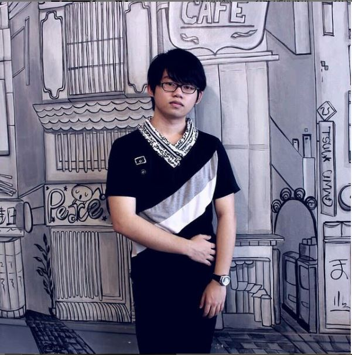

Hello, I'm Michael
Junior Web Developer
Bachelor's of Computer Science with an interest in Web Developer.
Contact MeAbout Me
My Introduction

Fresh graduate of Computer Science with internship experience as a coding instructor and working as a freelance web developer. Has developed several websites. Dedicated to becoming a web developer in a technology startup company to grow together and develop expertise in the IT.
1+
Years
experience
experience
8
Demo
Project
Project
2
Companies
Worked
Worked
Skills
My Skills LevelFrontend
Basic LevelHTML
50%CSS
40%JavaScript
30%Backend
Basic LevelPHP
30%SQL
30%Soft Skills
Intermediate LevelMentoring
80%Teamwork
70%Problem Solving
70%Qualification
My Personal JourneyFrontend Developer - Freelance
Super Elektronik - Tanjung Pinang
Apr 2023 - Present
Coding Instructor - Internship
KodeKiddo - Pekanbaru
Feb 2021 - Mar 2022
Hardware Technician - Vocational School
Service Point - Tanjung Pinang
Jan 2017 - Apr 2017
Computer Science
Bina Nusantara University - Jakarta
Sep 2018 - Sep 2022
Communication and Network Engineering
SMK Maitreyawira - Tanjung Pinang
Jul 2015 - Apr 2018